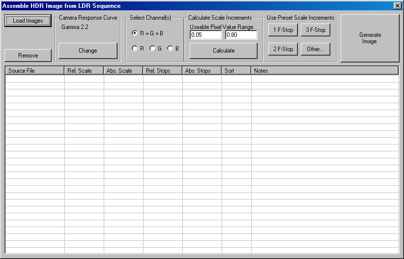

カメラ・レスポンス・カーブを用いたHDR Imageの構築
HDR
Shopは、異なるシャッター速度で撮影された、通常の24ビット・イメージのシークエンスから、ハイ・ダイナミック・レンジ・イメージ (HDRI)を作成します。撮影にあたっては、カメラを動かさないこと、最長の露光において、最も暗い部分が明瞭に見えるように、そして最短の露光では、最も明るい部分のイメージが白く「blasted
out」しないために「bｒacketed」であることを留意してください。
最小と最大の露光レベルが確定したら、露光の間隔を選びます。選択にあたっては、特にカメラのレスポンス・カーブがどの程度キャリブレートされているかも考慮に入れます。詳細は、チュートリアル「カメラ・カーブ・キャリブレーション」を見て下さい。もしレスポンス・カーブ（反応曲線）がわからなければ、たとえば、1段階別というように、各イメージを互いに近接したシークエンスとして撮ることを推奨します。カメラ・カーブが一旦キャリブレートされれば、3段階ごとなど、もう少しシークエンスを離すことが可能です。経験上、各イメージを近づけすぎることはできないので、決心がつかないときは、1段階ずつのシークエンスにしてください。そうすれば、カメラ・カーブがうまくキャリブレートされない場合でも、比較的良い結果を導き出すことができるでしょう。
はじめに、スクリーン上部の“Create”のプルダウンメニューから、 “Assemble Image Sequence”をクリックします。 “Assemble HDR Image from LDR Sequence”ダイアログ・ボックスが表示されます。

はじめに、LDRイメージ・シークエンスをロードします。 “Load Images”ボタンをクリックし、ファイル・セレクターからイメージの全シークエンスを選択します。イメージのファイルネームが、ダイアログ・ボックス内のワークシートに表示されます。
ワークシート内のイメージは、最短の露光から最長の露光まで、順番に表示されるようになっています。HDRShopは、自動的に各イメージのピクセルの平均輝度 (the average brightness) から、イメージをソートします。この輝度は、
“sort”カラム内に表示されます。もし、この順番が何らかの理由で正しくない場合、 “sort”カラムに直接（訳注：手動で）イメージのピクセル平均値を入力する事が出来ます。HDR
Shopは、この入力された数字に従って、イメージをソートします。
次に、各イメージを撮影したカメラのレスポンス・カーブを指定します。上述したように、このカーブは前のチュートリアルで計算することができます。 カメラ・レスポンス・カーブを選択するために、
“Change”ボタンをクリックします。カメラがスタンダード・ガンマ・カーブやリニアー・カーブを用いることを知っているのであれば、それらを直接入力します。“gamma
curve”タブをクリックし、ガンマ・カーブの値を入力してください。多くのカメラは、ガンマ2.2のカーブに近い、もしくはガンマ=1.0、つまり直線に近いです。より良い結果のために、自分自身で計算したレスポンス・カーブを用いることができるでしょう。
“Custom Curve”タブをクリックし、カーブのファイル名をテキストボックスに入力する、または、 “Browse”からファイルを選択します。 “Renormalize Curve”チェックボックスが選択されている場合、HDR
Shopは自動的に、カーブの最大値が「1」になるようにスケーリングを掛けます。シークエンスからHDRイメージを組み立てるために、このチェックボックスは常に選択されているべきです。適切なカーブがロード、或いは選択されたら、
“OK”をクリックします。
次に、どのイメージが、どのような露光設定で撮影されたかをHDR Shopに知らせる必要があります。これらの値はカラーチャンネル毎か、イメージ全体かで特定することができます。ほとんどの撮影素材では、異なるカラーチャンネルにおいて、相対的なEV値は変わらないでしょう。
“Select Channels”エリアで、 “R=G=B”ボタンを選択してください。もし単一のカラーチャンネルが選択されているならば、ワークシートに入力された値は、その時点で選択されたカラーチャンネルのみに適用されるでしょう。
“Calculate Scale Increments” 内の “Calculate”ボタンは、シークエンスのイメージにおける光量の相対値をHDR
Shopに自動的に計算させるようにします。しかしながらこれを用いるためには、各イメージが互いに接近して撮影されていることと、カメラ・カーブを知っていなければいけません。一般的には、シークエンスのイメージにおける光量の相対値を知っていることと、それらの値を手動で入力することが必要といえます。
多くの場合、シークエンスのイメージは、f-stopの間隔は一定で撮影されているでしょう。この場合、 “Use Preset Scale Increments”エリアの適切なボタンをクリックしてください。もしイメージがその他のf段階の間隔で撮影されているならば
“Other”ボタンをクリックし、インクリメントを手動で入力してください。
f-stopインクリメントのいずれかのボタンが押された時（訳注：撮影時の
f-stop が等間隔の時）、“Relative Stops” カラムの値は、押されたボタンの f-stop インクリメント値とイコールになるはずです。このカラムは、一つ前のイメージと比べて、どれだけ
f-stop が明るいか（訳注：レンズが明るいか）を示しています。“Absolute Stops”カラムは、シークエンスの最初のイメージと比べて、どれだけf-stopが明るいかを示します。同様に、“Relative
Scale”カラムは一つ前のイメージと比べて何倍明るいかを示し、そして “Absolute Scale”カラムはシークエンスの最初のイメージと比べて、何倍明るいかを示します。そのスケール値は、f-stop
の 底2のlog 値になります（訳注：つまり、そのスケール値は、2のf-stop乗になります）。なぜなら、f-stop は露光レベルを指数で表した値であるからです。
イメージが一定していない間隔で撮られたならば、直接ワークシート内の適切なセルに、これらの値を手動で入力してください。注意：この作業は、行内の他の値も自動的に更新します。
最後に、イメージがロードされ、カメラ・カーブが選択され、照度が入力されたら、 “Generate Image”ボタンを選択してください。各イメージがひとつのHDRイメージとしてコンパイルされます。